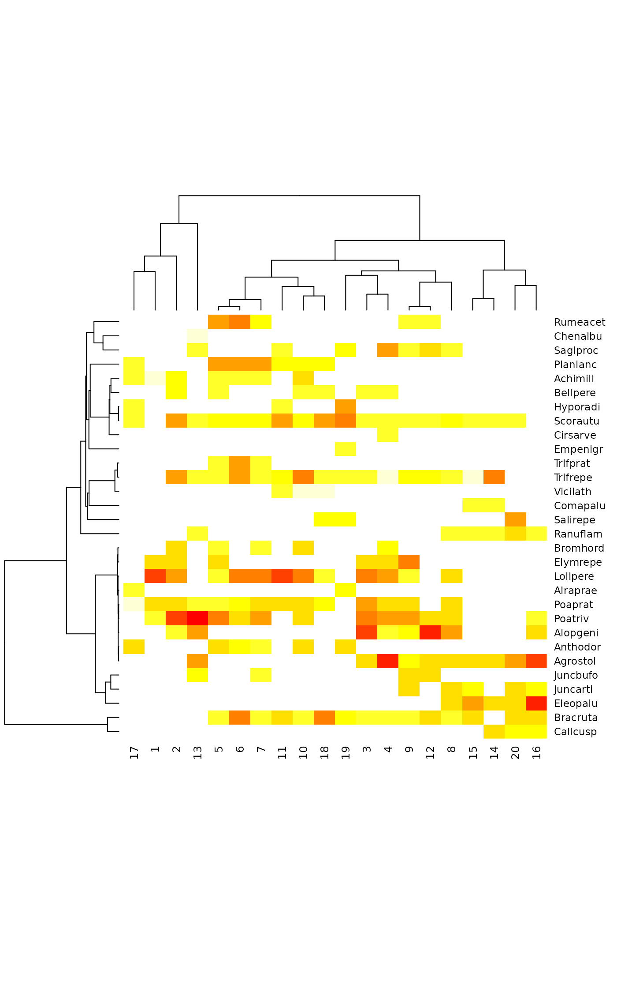

Functional Diversity and Community Distances from Species Trees
treedive.RdFunctional diversity is defined as the total branch length in a trait dendrogram connecting all species, but excluding the unnecessary root segments of the tree (Petchey and Gaston 2006). Tree distance is the increase in total branch length when combining two sites.
Usage
treedive(comm, tree, match.force = TRUE, verbose = TRUE)
treeheight(tree)
treedist(x, tree, relative = TRUE, match.force = TRUE, ...)Arguments
- comm, x
Community data frame or matrix.
- tree
A dendrogram which for
treedivemust be for species (columns).- match.force
Force matching of column names in data (
comm,x) and labels intree. IfFALSE, matching only happens when dimensions differ (with a warning or message). The order of data must match to the order intreeif matching by names is not done.- verbose
Print diagnostic messages and warnings.
- relative
Use distances relative to the height of combined tree.
- ...
Other arguments passed to functions (ignored).
Details
Function treeheight finds the sum of lengths of connecting
segments in a dendrogram produced by hclust, or other
dendrogram that can be coerced to a correct type using
as.hclust. When applied to a clustering of species
traits, this is a measure of functional diversity (Petchey and Gaston
2002, 2006), and when applied to phylogenetic trees this is
phylogenetic diversity.
Function treedive finds the treeheight for each site
(row) of a community matrix. The function uses a subset of
dendrogram for those species that occur in each site, and excludes
the tree root if that is not needed to connect the species (Petchey
and Gaston 2006). The subset of the dendrogram is found by first
calculating cophenetic distances from the input
dendrogram, then reconstructing the dendrogram for the subset of the
cophenetic distance matrix for species occurring in each
site. Diversity is 0 for one species, and NA for empty
communities.
Function treedist finds the dissimilarities among
trees. Pairwise dissimilarity of two trees is found by combining
species in a common tree and seeing how much of the tree height is
shared and how much is unique. With relative = FALSE the
dissimilarity is defined as \(2 (A \cup B) - A - B\), where
\(A\) and \(B\) are heights of component trees and
\(A \cup B\) is the height of the combined tree. With relative = TRUE
the dissimilarity is \((2(A \cup B)-A-B)/(A \cup B)\).
Although the latter formula is similar to
Jaccard dissimilarity (see vegdist,
designdist), it is not in the range \(0 \ldots 1\), since combined tree can add a new root. When two zero-height
trees are combined into a tree of above zero height, the relative
index attains its maximum value \(2\). The dissimilarity is zero
from a combined zero-height tree.
The functions need a dendrogram of species traits or phylogenies as an
input. If species traits contain factor or
ordered factor variables, it is recommended to use Gower
distances for mixed data (function daisy in
package cluster), and usually the recommended clustering method
is UPGMA (method = "average" in function hclust)
(Podani and Schmera 2006). Phylogenetic trees can be changed into
dendrograms using function as.hclust.phylo in the
ape package.
It is possible to analyse the non-randomness of tree diversity
using oecosimu. This needs specifying an adequate Null
model, and the results will change with this choice.
Value
A vector of diversity values or a single tree height, or a
dissimilarity structure that inherits from dist and
can be used similarly.
References
Lozupone, C. and Knight, R. 2005. UniFrac: a new phylogenetic method for comparing microbial communities. Applied and Environmental Microbiology 71, 8228--8235.
Petchey, O.L. and Gaston, K.J. 2002. Functional diversity (FD), species richness and community composition. Ecology Letters 5, 402--411.
Petchey, O.L. and Gaston, K.J. 2006. Functional diversity: back to basics and looking forward. Ecology Letters 9, 741--758.
Podani J. and Schmera, D. 2006. On dendrogram-based methods of functional diversity. Oikos 115, 179--185.
See also
Function treedive is similar to the phylogenetic
diversity function pd in the package picante, but
excludes tree root if that is not needed to connect species. Function
treedist is similar to the phylogenetic similarity
phylosor in the package picante, but excludes
unneeded tree root and returns distances instead of similarities.
taxondive is something very similar from another bubble.
Examples
## There is no data set on species properties yet, and we demonstrate
## the methods using phylogenetic trees
data(dune)
data(dune.phylodis)
cl <- hclust(dune.phylodis)
treedive(dune, cl)
#> forced matching of 'tree' labels and 'comm' names
#> 1 2 3 4 5 6 7 8
#> 384.0913 568.8791 1172.9455 1327.9317 1426.9067 1391.1628 1479.5062 1523.0792
#> 9 10 11 12 13 14 15 16
#> 1460.0423 1316.4832 1366.9960 1423.5582 895.1120 1457.2705 1505.9501 1187.5165
#> 17 18 19 20
#> 517.6920 1394.5162 1470.4671 1439.5571
## Significance test using Null model communities.
## The current choice fixes numbers of species and picks species
## proportionally to their overall frequency
oecosimu(dune, treedive, "r1", tree = cl, verbose = FALSE)
#> Warning: nullmodel transformed 'comm' to binary data
#> oecosimu object
#>
#> Call: oecosimu(comm = dune, nestfun = treedive, method = "r1", tree =
#> cl, verbose = FALSE)
#>
#> nullmodel method ‘r1’ with 99 simulations
#>
#> alternative hypothesis: statistic is less or greater than simulated values
#>
#> statistic SES mean 2.5% 50% 97.5% Pr(sim.)
#> 1 384.09 -1.238698 773.72 383.47 628.63 1237.7 0.11
#> 2 568.88 -2.353877 1222.61 663.93 1337.50 1561.4 0.01 **
#> 3 1172.95 -0.136353 1210.76 679.53 1327.94 1581.5 0.63
#> 4 1327.93 -0.418624 1427.25 886.63 1505.15 1733.1 0.45
#> 5 1426.91 -0.322462 1496.97 926.98 1559.25 1734.4 0.43
#> 6 1391.16 0.254066 1326.70 753.19 1408.30 1634.7 0.87
#> 7 1479.51 0.280433 1407.90 880.79 1476.23 1735.1 0.99
#> 8 1523.08 0.567886 1389.63 792.74 1428.01 1655.3 0.65
#> 9 1460.04 0.065245 1448.21 899.67 1472.92 1654.4 0.87
#> 10 1316.48 -0.192836 1362.43 708.60 1441.63 1608.0 0.47
#> 11 1367.00 0.768160 1150.05 621.65 1266.73 1486.4 0.43
#> 12 1423.56 1.101039 1088.13 622.24 1208.95 1474.2 0.25
#> 13 895.11 -0.972053 1188.10 656.34 1325.53 1558.5 0.61
#> 14 1457.27 1.477151 980.91 491.11 1101.65 1459.3 0.07 .
#> 15 1505.95 1.532058 1052.35 575.91 1171.88 1460.7 0.03 *
#> 16 1187.52 0.306608 1089.58 543.75 1238.26 1490.7 0.89
#> 17 517.69 -1.446211 959.50 504.26 1101.16 1367.8 0.09 .
#> 18 1394.52 0.961778 1099.50 618.22 1249.49 1493.8 0.33
#> 19 1470.47 1.134795 1121.18 564.70 1240.26 1562.8 0.15
#> 20 1439.56 1.160566 1104.59 629.08 1244.20 1467.4 0.17
#> ---
#> Signif. codes: 0 ‘***’ 0.001 ‘**’ 0.01 ‘*’ 0.05 ‘.’ 0.1 ‘ ’ 1
## Phylogenetically ordered community table
dtree <- treedist(dune, cl)
tabasco(dune, hclust(dtree), cl)

## Use tree distances in capscale
capscale(dtree ~ 1, comm=dune)
#> Call: capscale(formula = dtree ~ 1, comm = dune)
#>
#> Inertia Rank
#> Total 2.335836
#> Unconstrained 2.343860 10
#> Imaginary -0.008024 9
#> Inertia is squared Treedist distance
#> Species scores projected from ‘dune’
#>
#> Eigenvalues for unconstrained axes:
#> MDS1 MDS2 MDS3 MDS4 MDS5 MDS6 MDS7 MDS8 MDS9 MDS10
#> 1.1971 0.4546 0.2967 0.1346 0.1067 0.0912 0.0391 0.0190 0.0045 0.0004
#>